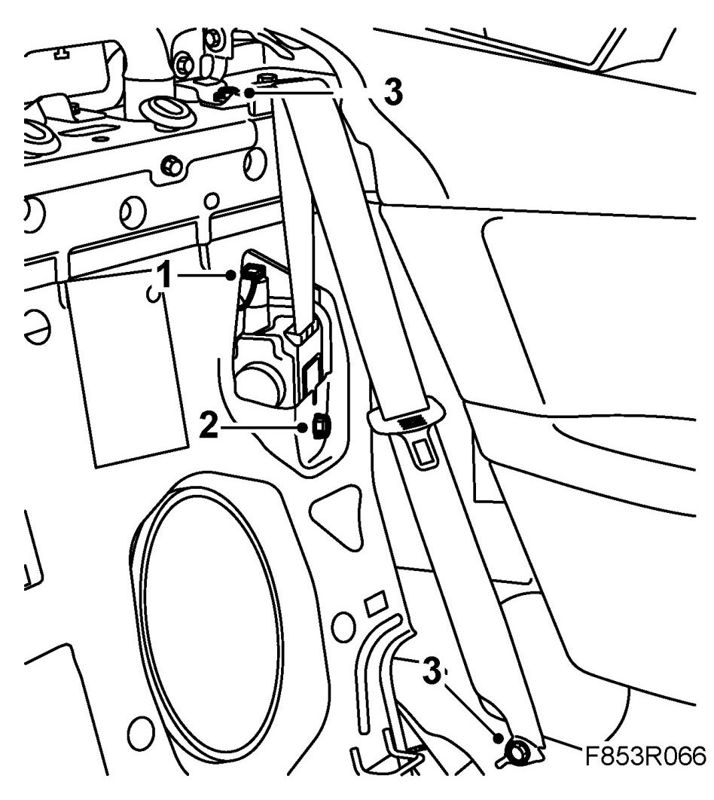

Belt Reel With Tensioner, Rear, CV
Belt Reel With Tensioner, Rear, CV
To remove
1. Open the hood fully and leave the tonneau cover open.
2. Remove the rear seat backrest.
3. Turn the ignition key to the position LOCK.
4. Remove the belt strap guide.
5. Remove the belt reel fixing screw and lift the belt reel out.
6. Remove the connector from the belt reel.
To fit
1. Attach the connector to the belt reel.

2. Place the belt reel in the assembly position and fit the screws.
Tightening torque 47 Nm (35 lbf ft)
3. Fit the strap guide.
Tightening torque 47 Nm (35 lbf ft)
4. Fit the backseat cushion.
5. Close the hood.
6. Turn ON the ignition and check the airbag system and control module using the diagnostic tool as follows:
Connect the diagnostics instrument to the diagnostics socket under the dashboard. Delete any trouble codes.
Switch off the ignition and then on again. Wait at least 1 minute with the ignition switched on.
Check whether a diagnostic trouble code is shown:
If the fault code is shown: Perform the current fault search as instructed for the trouble code concerned.
If the trouble code is not shown: Fitting is successful. Disconnect the diagnostic tool.